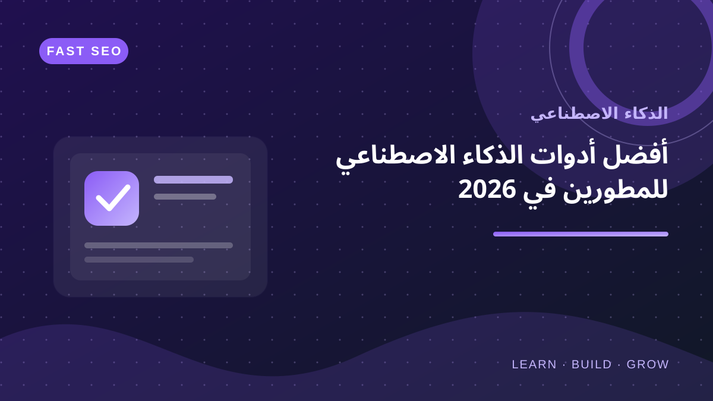
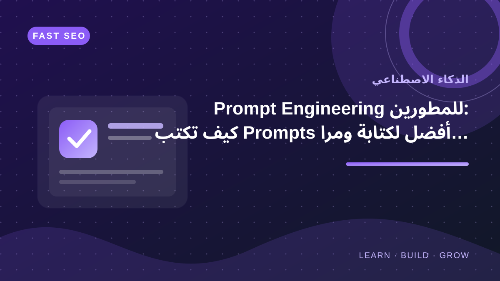
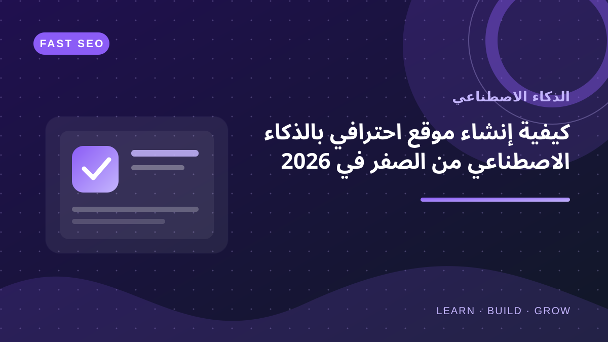

استكشف الذكاء الاصطناعي
تعرّف إلى طرق توظيف الذكاء الاصطناعي في البرمجة وصناعة المحتوى وبناء المنتجات الرقمية، مع التحقق من المخرجات وعدم الاعتماد عليها دون مراجعة.

جميع المقالات في الذكاء الاصطناعي
اختر مقالًا لقراءة الدليل كاملًا.
أفضل Prompts لبرمجة المواقع بالذكاء الاصطناعي: من الفكرة إلى كود قابل للصيانة
أمثلة عملية لصياغة Prompts دقيقة لكتابة ومراجعة الكود.
اقرأ المقال الذكاء الاصطناعيأفضل أدوات الذكاء الاصطناعي للمطورين في 2026
دليل عملي لاختيار أدوات الذكاء الاصطناعي للمطورين حسب حالة الاستخدام ومعايير الخصوصية والتكامل وجودة المخرجات.
اقرأ المقال
الذكاء الاصطناعيPrompt Engineering للمطورين: كيف تكتب Prompts أفضل لكتابة ومراجعة الكود
دليل عملي لبناء Prompts أوضح للمطورين عبر تحديد الهدف والسياق والقيود والمخرجات ثم تحسينها بالتكرار والاختبار والمراجعة.
اقرأ المقال
الذكاء الاصطناعيكيفية إنشاء موقع احترافي بالذكاء الاصطناعي من الصفر في 2026
دليل عملي للتخطيط وبناء موقع حديث بالذكاء الاصطناعي.
اقرأ المقالأسئلة شائعة عن أدلة الذكاء الاصطناعي
هل تضمن أدوات الذكاء الاصطناعي صحة النتائج؟
لا. قد تنتج الأدوات معلومات غير دقيقة أو شيفرات غير مكتملة؛ راجع المصادر واختبر النتائج قبل اعتمادها.
كيف أختار أداة ذكاء اصطناعي مناسبة؟
حدد المهمة والميزانية ومتطلبات الخصوصية والتكامل، ثم قارن النتائج بقياس عملي صغير قبل اعتماد الأداة.
هل ينبغي مشاركة بيانات المشروع مع هذه الأدوات؟
لا ترسل كلمات مرور أو مفاتيح API أو بيانات شخصية أو شيفرات سرية. راجع شروط الخدمة وسياسة الاحتفاظ بالبيانات لدى المزود.
موضوعات ذات صلة
حوّل المعرفة إلى مشروع
استكشف البرمجة وتطوير الويب والأدوات التي تساعد على تطبيق أفكار الذكاء الاصطناعي.